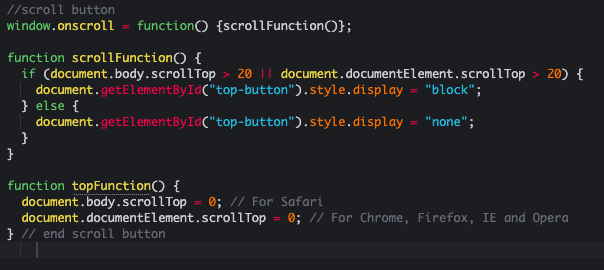
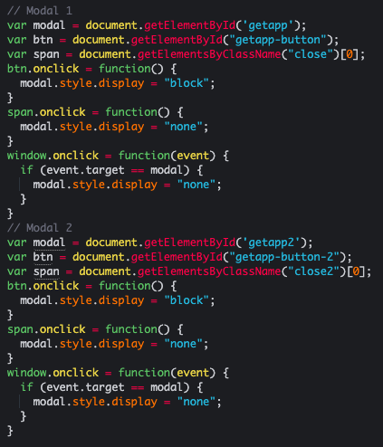
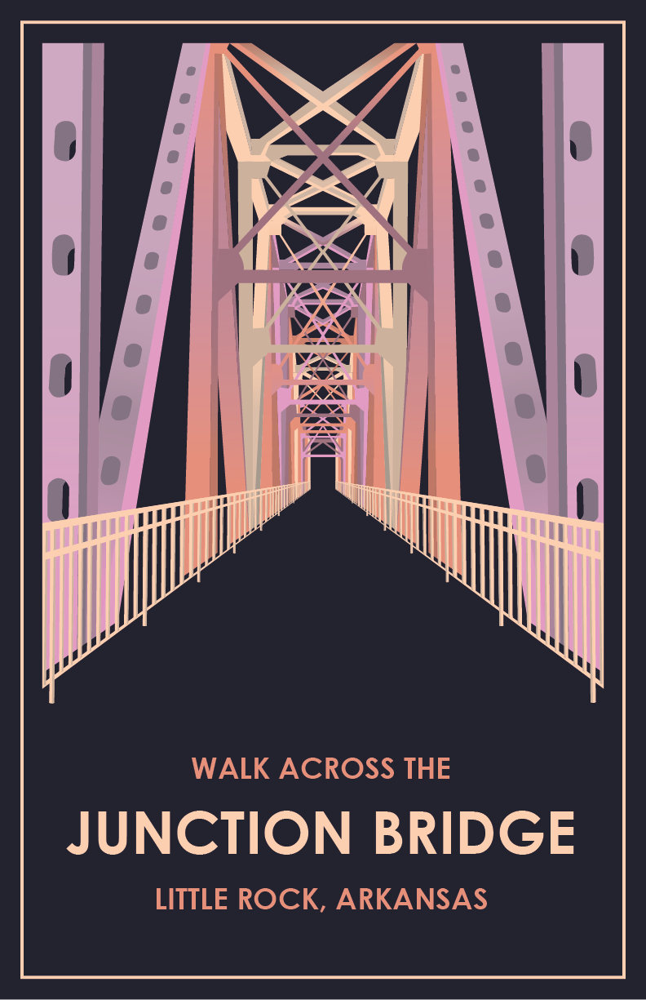
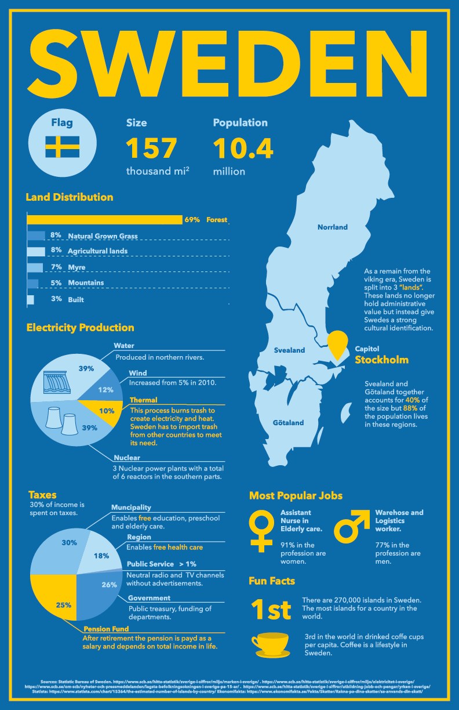
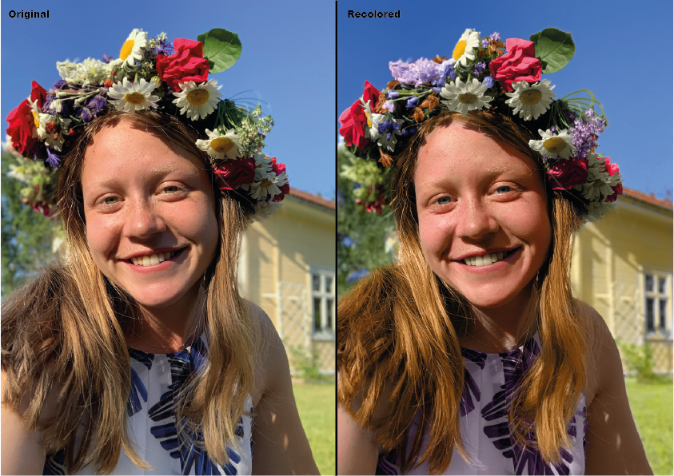

Work Examples of Hilma Svalander
Research paper
This writing assignemnt is an example of a research paper written about plastic ways in the ocean based on scholarly articles for a Composition class. First a proposal was written, then an annotaed bibliography before the actual paper was completed. Lastly an infographic was designed based on the research paper. Below you can find the PDFs of the assignments.
Philosophy Analysis
Here is an essay written in a philosophy class analyizing American philosophy professor Hilde Lindemann and her feminist ethics.
Website for an App
Below is a responsive website I built for a mobile app company as a project in one of my web design classes. It incorporates CSS and JavaScript.
Web Review Assignment
Here is an example of a Web project conducted as a review exercise for my senior class Casptone 1. The assignement was to recreate the image below then answer the questions in the image. Hover over the image to enlarge it.

Here is my version: Web Design Review
Database Project
Below you can find the project report of my SQL Soccer Club Database that I designed and implemented. It inlcudes the different aspects of database design with ER-modeling, Relational Schemas and SQL script to create, populate and use the database. I created a soccer club database as I'm a soccer player myself and therefore have a deep understanding for the structure of a soccer club.
ER-Diagram
Here is an example of an ER-diagram that was designed based on a given set of requirments and assumptions as an assignment for my Databse Concepts class
Java Interface
In my Human Computer Interface class I, together with two other group members designed and built an interface using Java. The task was to build an interface that enabled users to add, modify and delete user and website data for various websites. The class was all about making a computer interface interact well with humans, the users. I was responsible for programming the adding and modifying user data (part a + b). Below is my groups final presentation that won't show you the code but instead the final result of our interface. Our interface worked flawlessly and was recognized as the best interface design and presentation in our class.
JavaScript
The images provides examples of a "Back to Top"-button and modal boxes created using JavaScript for a website I designed.
To see the full website click here
Back-to-top-button
Modal Boxes
Systems Analysis and Design Project
Below is the project report from a Hotel Reservation System I designed. It contains UML diagrams showing the Data Flow, Use Cases, Interaction diagrams. This project shows my System Analyis and Design skills.
Art Lecture Assessment
For one of my studio art classes I wrote a short lecture assessment based on a three-part Youtube series that covered the start and rise of Adobe Illustrator. I discussed how the program was revoloutionary and how the mentality of the creators should inspire us today.
Vector Illustrations
Challenge Coins
This project involved deisgning Challenge Coins that represented me at the University of Arkansas at Little Rock
Travel Poster
This is a travel poster for the Junction Bridge in Little Rock, Arkansas
Infographic
An infographic covering facts and data about Sweden, my home country.
After Effects
The assignment for this project was to create a 15 second long animated sequence with audio, that highlighted two opposing themes. I decided to create an animation using Childish Gambino's song "This is America" to illustrate two opposing sides that I, as an international, see living in the US. All the illustrations and graphic elements was made using illustrator and the animation were created through After Effects.
Photoshop
Recolored image
With the use of Photoshop the left image was recolored and the result is the right image.
Animal Mash-Up
The task for this assignment was to make two animals look like one.